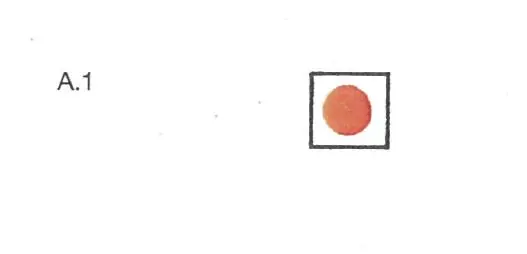

§ 10.01 Beschränkung der Schiffahrt bei Hochwasser oberhalb der Spyck'schen Fähre
Rheinschiffahrtspolizeiverordnung
1. Zwischen der Mittleren Rheinbrücke in Basel (km 166,53) und den Schleusen Kembs (km 179,10) sowie zwischen den Schleusen Iffezheim (km 334,00) und der Spyck’schen Fähre (km 857,40) ist die Schifffahrt bei Hochwasserständen zwischen den Marken I und II nachstehenden Beschränkungen unterworfen:
a) alle Fahrzeuge - mit Ausnahme der Kleinfahrzeuge ohne Maschinenantrieb - müssen sich in der Talfahrt möglichst in der Mitte, in der Bergfahrt im mittleren Drittel des Stromes halten; als Breite des Stromes gilt der Abstand zwischen den Uferlinien; beim Fahren einschließlich des Überholens sind höchstens bis zu zwei Schiffs- oder Verbandsbreiten zulässig;
b) erfordern es die örtlichen Verhältnisse, abweichend von Buchstabe a näher an ein Ufer heranzufahren, müssen alle dort genannten Fahrzeuge dennoch möglichst weit vom Ufer entfernt bleiben und ihre Geschwindigkeit entsprechend vermindern;
c) § 9.04 bleibt unberührt. Zwischen Lorch (km 540,20) und St. Goar (km 556,00) hat die Bergfahrt das mittlere Drittel des Stromes aber so weit zum linken Ufer einzuhalten, daß die Begegnung mit der Talfahrt ohne Gefahr Backbord an Backbord stattfinden kann;
d) unbeschadet des § 6.20 darf die Höchstgeschwindigkeit der Fahrzeuge gegenüber dem Ufer 20 km in der Stunde nicht überschreiten, ausgenommen die Talfahrt in der Gebirgsstrecke zwischen Bingen (km 528,50) und St. Goar (km 556,00), in der die Höchstgeschwindigkeit der Fahrzeuge gegenüber dem Ufer 24 km in der Stunde nicht überschreiten darf;
e) nach Überschreiten der Hochwassermarke I dürfen innerhalb des entsprechenden Streckenabschnitts nur solche Fahrzeuge ihre Fahrt fortsetzen, die mit einer Sprechfunkanlage ausgerüstet sind. Sie müssen den Verkehrskreis Nautische Information auf Empfang geschaltet haben. Dies gilt nicht für Kleinfahrzeuge, die mit Muskelkraft fortbewegt werden;
f) nach Überschreiten der Hochwassermarke I ist schnellen Schiffen die Fahrt verboten.
2. Erreicht oder überschreitet der Wasserstand die Hochwassermarke II an dem Richtpegel für den unter Nummer 3 aufgeführten Streckenabschnitt, ist die Schiffahrt mit Ausnahme des Übersetzverkehrs innerhalb des Streckenabschnitts verboten.
3. Die in Nummer 1 und 2 genannten Hochwassermarken werden durch folgende Wasserstände bestimmt und die Richtpegel für die Berg- oder Talfahrt gelten für die nachstehend aufgeführten Streckenabschnitte:
Strecke | Richtpegel für Berg- und Talfahrt Wasserstand |
Marke I | Marke II |
Basel (km 166,53) | |
Basel-Schleusen Kembs Kembs (km 179,10) | Basel-Rheinhalle 7,00 8,20 |
Schleusen Iffezheim (km 334,00) | |
Schleusen Iffezheim-Germersheim Germersheim (km 384,00) | Maxau 6,20 7,50 |
Germersheim-Mannheim-Rheinau Mannheim-Rheinau (km 410,50) | Speyer 6,20 7,30 |
Mannheim-Rheinau-Mannheim-Sandhofen Mannheim-Sandhofen (km 431,50) | Mannheim 6,50 7,60 |
Mannheim-Sandhofen-Gernsheim Gernsheim (km 462,00) | Worms 4,40 6,50 |
Gernsheim-Eltville Eltville (km 511,00) | Mainz 4,75 6,30 |
Eltville-Lorch Lorch (km 540,00) | Bingen 3,50 4,90 |
Lorch-Bad Salzig Bad Salzig (km 566,00) | Kaub 4,60 6,40 |
Bad Salzig-Engers Engers (km 601,00) | Koblenz 4,70 6,50 |
Engers-Bad Breisig Bad Breisig (km 624,00) | Andernach 5,50 7,60 |
Bad Breisig-Mondorf Mondorf (km 660,00) | Oberwinter 4,90 6,80 |
Mondorf-Dormagen Dormagen (km 710,00) | Köln 6,20 8,30 |
Dormagen-Krefeld Krefeld (km 763,00) | Düsseldorf 7,10 8,80 |
Krefeld-Orsoy Orsoy (km 794,00) | Duisburg-Ruhrort 9,30 11,30 |
Orsoy-Rees Rees (km 837,00) | Wesel 8,70 10,60 |
Rees-Spyck'sche Fähre Spyck'sche Fähre (km 857,40) | Emmerich 7,00 8,70 |
4. Zwischen Basel und den Schleusen Kembs können die zuständigen Behörden einzelnen Fahrzeugen und Verbänden für diesen Streckenabschnitt bis zu einem Wasserstand von 8,50 m am Pegel Basel-Rheinhalle die Fahrt freigeben, wenn der Wasserstand bereits seit mehr als drei aufeinanderfolgenden Tagen überwiegend über der Marke von 8,20 m lag und die Vorhersagen dahin gehen, dass der Wasserstand auch an den folgenden zwei Tagen noch über dieser Marke liegen wird.
5. Zwischen den Schleusen Kembs und den Schleusen Iffezheim (km 334,00) wird die Schiffahrt bei Hochwasser wie folgt geregelt:
a) zwischen dem oberen Vorhafen der Schleusen Kembs und dem oberen Vorhafen der Schleusen Vogelgrün ist die Schiffahrt keinen Beschränkungen wegen Hochwassers unterworfen. Die zuständige Behörde kann jedoch, um Ansammlungen von Fahrzeugen in den Vorhäfen der Schleusen Kembs und Vogelgrün zu vermeiden, die Fahrzeuge auf die Vorhäfen der verschiedenen Schleusen verteilen;
b) zwischen den Schleusen Vogelgrün und den Schleusen Iffezheim
- wird der Betrieb der Schleusen einer gegebenen Haltung eingestellt, wenn die auf einer Mauer bei dem Unterhaupt dieser Schleusen sichtbar angebrachte Hochwassermarke II erreicht oder überschritten ist;
- ist Kleinfahrzeugen die Fahrt in einer Haltung verboten, wenn die an dem Unterhaupt der jeweils oberhalb liegenden Schleuse sichtbar angebrachte Hochwassermarke II erreicht oder überschritten ist.
Jedoch kann die zuständige Behörde einzelnen Fahrzeugen und Verbänden für den Streckenabschnitt von unterhalb der Schleuse Vogelgrün bis unterhalb der Schleuse Straßburg bis zu einem Wasserstand von 0,40 m über der angebrachten Hochwassermarke II die Fahrt und die Schleusungen freigeben, wenn der Wasserstand bereits seit mehr als drei aufeinander folgenden Tagen überwiegend über der Hochwassermarke II lag und die Vorhersagen dahin gehen, dass der Wasserstand auch an den folgenden zwei Tagen noch über dieser Hochwassermarke liegen wird;
c) auf der Stromstrecke zwischen dem südlichen Vorhafen (km 291,30) und dem nördlichen Vorhafen (km 295,50) des Straßburger Hafens wird die Schiffahrt bei Erreichen des höchsten Schiffahrtswasserstandes (HSW) wie folgt gesperrt:
-
in der Talfahrt durch ein bei km 291,30 |  |
aufgestelltes rotes Licht (Zeichen A.1, Anlage 7); |
-
in der Bergfahrt durch ein bei km 294,50 | |
aufgestelltes rotes Licht (Zeichen A.1, Anlage 7). |